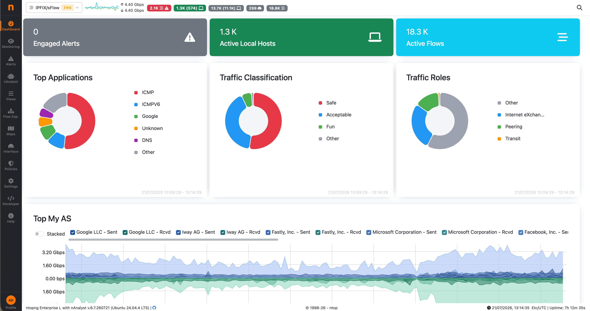
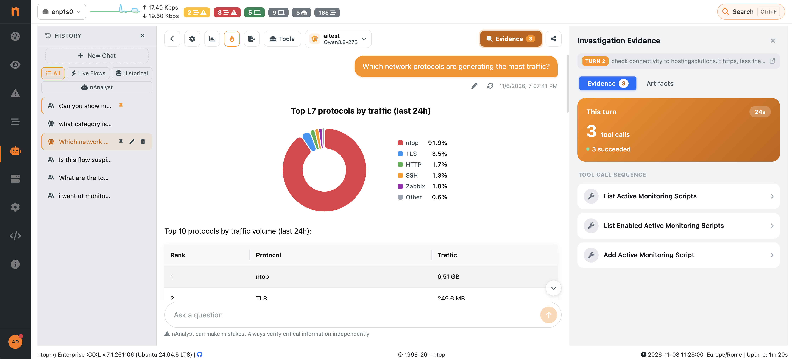
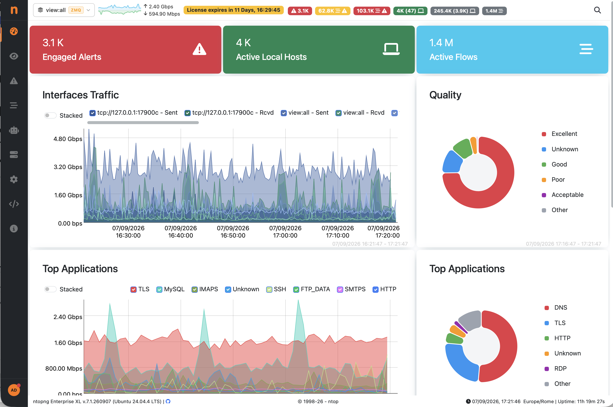
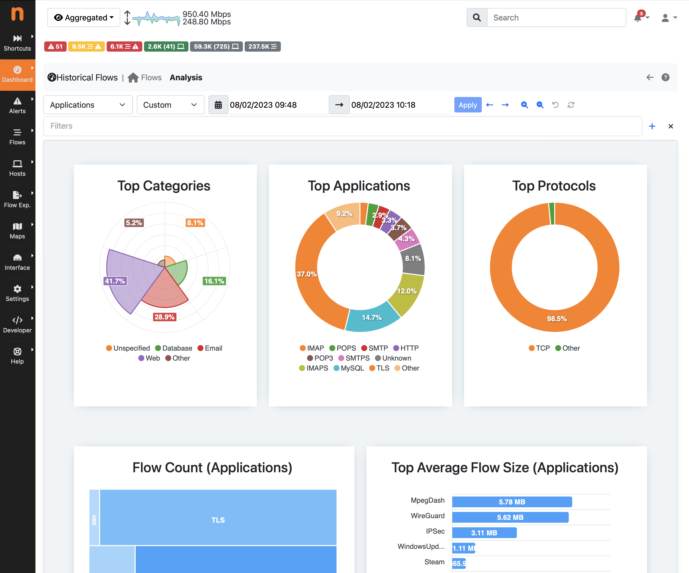
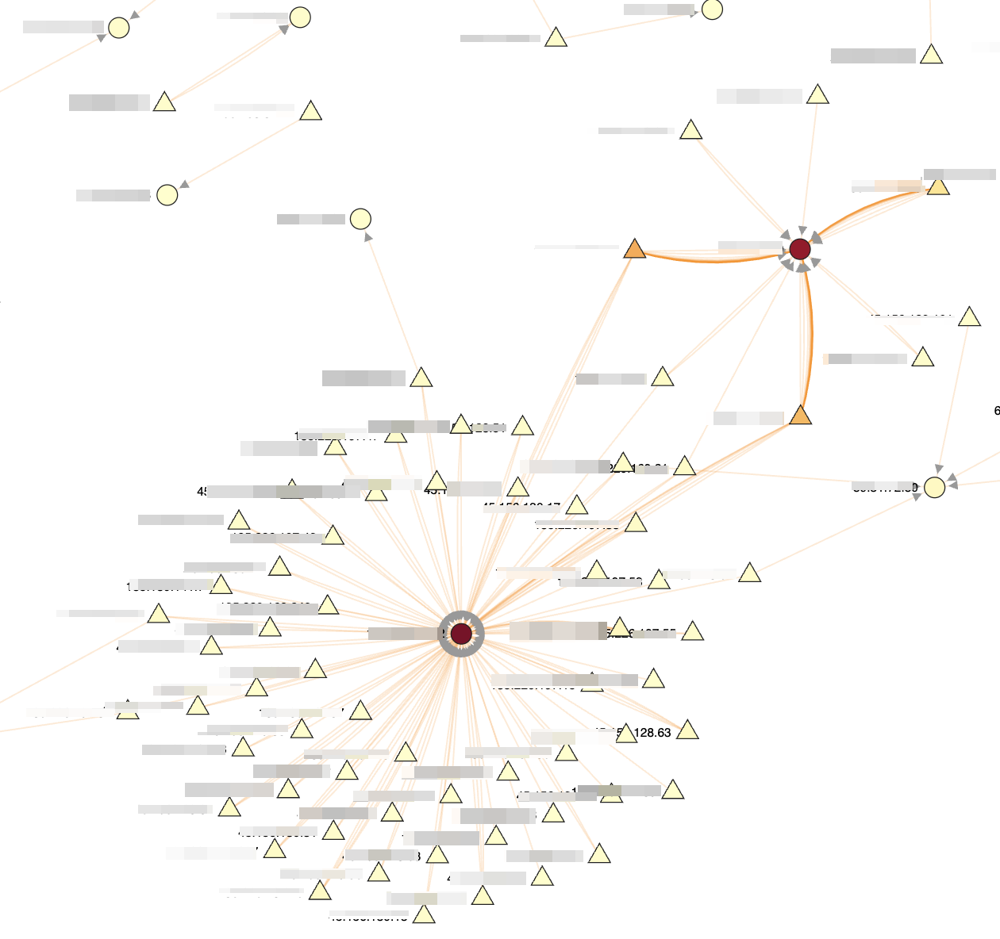
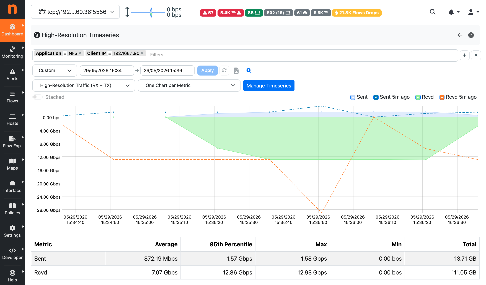

AI-powered network monitoring and traffic analysis
AI network monitoring: see every host, flow and threat.
Stop guessing what is on your network. ntopng turns raw traffic into answers: who is talking, what they run and what looks wrong. Traffic analysis, NetFlow collection, deep packet inspection and an on-prem AI analyst in one console, on your own infrastructure.
- Free open source edition
- No signup
- Your data never leaves your network

Trusted by 14,000 networks and our technology partners
networks monitored
probes installed
years of experience
GitHub stars
Layer-7 protocols
network professionals
The problem
Is this your network today?
Most teams fly blind until something breaks, then lose hours stitching answers together from five tools.
"The network is slow" and nobody knows why
Without per-flow data, teams argue about the cause instead of fixing it.
Encrypted and shadow traffic you cannot see
Everything hides behind port 443. Unknown apps and risky hosts go unnoticed.
Alerts with no context
Hundreds of alarms and no way to tell the attacker from the noise.
Tools that want your traffic in their cloud
Sending packets and metadata to a third party is a risk you cannot accept.
Native AI, on-prem
AI network analysis: ask your network a question, get the answer.
nAnalyst is built into the ntop stack. Ask in plain language and get charts, root causes and an evidence log, all computed on ntopng data inside your own infrastructure. No traffic is sent to a cloud AI service.
- Data sovereignty: fully on-prem
- Evidence-backed answers, no black box
- Native to ntopng and nDPI

The solution
Network traffic analysis software that answers them all
ntopng turns raw traffic into answers. See it, understand it and prove it, without sending a byte outside.
Real-time network monitoring: find the culprit in seconds
Top talkers, applications, countries and interface throughput update live. Click any chart to drill into the hosts and flows behind it.
- Live traffic by host, application, VLAN and AS
- Multi-interface and multi-site views
- Customizable dashboards


Deep packet inspection: see the application, even when encrypted
nDPI recognises 450+ protocols, so you see Teams and Netflix, not just port 443, plus TLS, JA4 and DNS metadata.
- Application and category breakdown
- Flow risks highlighted automatically
- Spot shadow IT and bandwidth hogs
Network threat detection: alerts that point to the problem
Hundreds of checks flag anomalies and security issues. The alerts graph shows attackers and victims at a glance, so you start with the biggest risk.
- Email, Slack, Discord, PagerDuty and webhook alerts
- Behavioral and threshold-based checks
- Drill from alert to flow to packets


NetFlow, sFlow and IPFIX collector: prove what happened
Collect NetFlow, sFlow and IPFIX or capture packets from a mirror port. Keep flows in ClickHouse and chart the past. Pull exact packets with n2disk.
- NetFlow, sFlow, IPFIX collector
- 10 to 100 Gbit with PF_RING and Cento
- Historical flows and timeseries
Who uses it
Network visibility software for every kind of network
Enterprise IT
Campuses, branches and the cloud in one console.
ISPs and carriers
Backbone, subscribers and DDoS defense.
Industrial and OT
Passive visibility for OT and ICS networks.
Government and critical infrastructure
Self-hosted visibility with audit trails.
Quickstart
Install open source network monitoring in minutes
No agents, no cloud account, no sales call.
1. Install
Add the ntop repository, then install on Linux, Windows, macOS or Raspberry Pi.
sudo apt-get install ntopng
2. Feed it traffic
Use a mirror port or TAP, or send NetFlow, sFlow or IPFIX from your routers through nProbe.
nprobe --collector-port 2055 --zmq tcp://*:5556
3. Open the dashboard
Browse to your server on port 3001. Hosts, applications and alerts appear right away.
https://YOUR-IP:3001
Editions
Start free, upgrade when you need to
The Community edition is a complete network visibility tool. Paid editions add scale, reports and integrations.
Community
Free and open source
- Real-time visibility and top talkers
- Layer-7 application detection (nDPI)
- Alerts, timeseries, network discovery
Professional
Everything in Community, plus
- Interface aggregation, LDAP authentication
- Extended behavioral checks and alerts
Enterprise
Everything in Professional, plus
- Historical data and reports
- Extended SNMP, flow exporter statistics
- Identity management with VPNs
FAQ
Questions, answered
Still unsure? Read the full FAQ or ask us.
Is ntopng really free?
Yes. The Community edition is free and open source under the GNU GPLv3 license, with real-time visibility, Layer-7 detection and alerts. Professional and Enterprise editions are commercial and add scale, reports and integrations.
Does my traffic leave my network?
No. ntop software is self-hosted, and the nAnalyst AI assistant also runs on-premises.
What do I need to start?
A Linux, Windows, macOS or Raspberry Pi OS machine and a way to see traffic: a mirror (SPAN) port, a TAP, or NetFlow, sFlow or IPFIX from your routers and switches.
How do I analyze traffic from routers that export NetFlow?
Send the flows to nProbe, which forwards them to ntopng. The NetFlow quickstart walks through every step.
Can ntopng handle high-speed networks?
Yes. With PF_RING and nProbe Cento, ntopng analyzes traffic on 10 to 100 Gbit links.
What is the difference between network monitoring and network visibility?
Monitoring tells you a link is up or busy. Visibility tells you why: which host, application or flow is behind the traffic. ntopng gives you both.
Does ntop offer AI network analysis?
Yes. nAnalyst is a native AI network analyst built on ntopng data. It runs on-premises, so your traffic stays under your control.
Can I get professional help?
Yes. ntop offers professional support, training and custom development. Contact the team for details.
Get started
See your network clearly, starting today
Install ntopng in five minutes and watch your first flows appear. Need scale, licensing or a walkthrough? Our engineers reply fast.
Free Community edition · Open source since 1998 · Professional support available